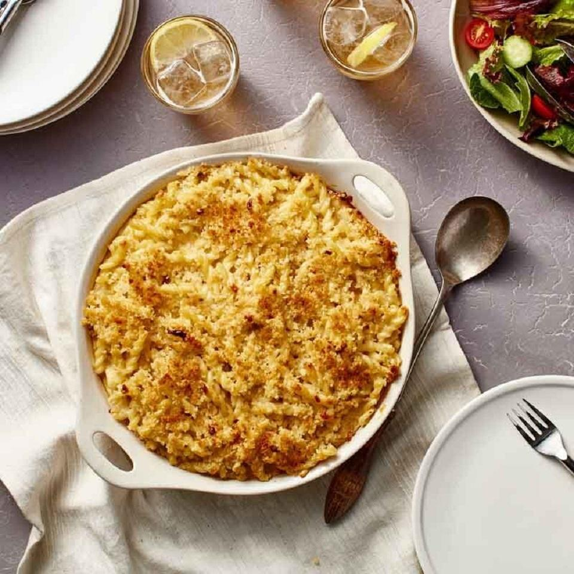

Back
Mac 'n Cheese

Macaroni and cheese—also called mac and cheese in the United States and macaroni cheese in the United Kingdom—is a dish of cooked macaroni pasta and a cheese sauce, most commonly cheddar. It can also incorporate other ingredients, such as breadcrumbs or meat.
Ingredients (2 servings)
- 1 cups gemelli pasta, uncooked
- 1/3 (5 ounce) can evaporated milk
- 1/4 cup and 1 tablespoon and 1 teaspoons Hidden Valley® Original Ranch® Salad Dressing
- 2/3 large eggs eggs, slightly beaten
- 1 cups grated Asiago cheese
- 2 1/2 tablespoons and 1/2 teaspoon unseasoned bread crumbs
- 1/2 tablespoon and 1/2 teaspoon unsalted butter
Directions
- 1. Preheat oven to 350 degrees F.
- 2. Cook pasta according to package directions. Rinse and drain.
- 3. In a medium bowl, whisk evaporated milk, dressing and eggs together until smooth. Fold in the cheese. Add the cooked pasta and mix well. Spoon pasta mixture into an oiled 1 1/2-quart casserole. In a bowl, combine bread crumbs and melted butter. Sprinkle on top of pasta. Bake for 20 to 25 minutes until the top is nicely browned and heated through.
Nutritions per servings
- 701 calories
- protein 27.1g
- carbohydrates 51.7g
- fat 43.1g
- cholesterol 140.5mg
- sodium 1119.7mg